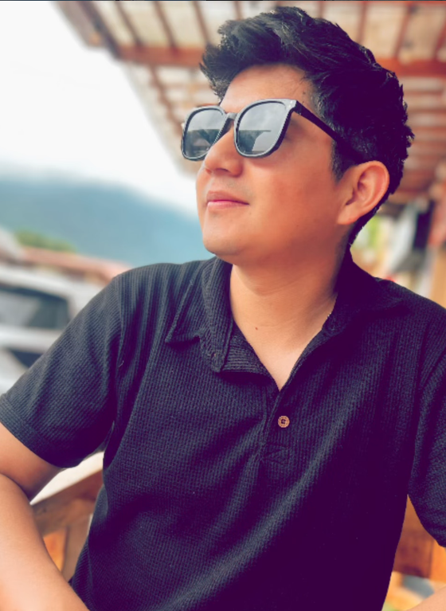

Ideas que se ven.
Historias que
conectan.
Soy David Moya, realizador audiovisual y diseñador multimedia. Transformo ideas en contenido visual para marcas, campañas y medios.

Distintas marcas.
Una mirada creativa.
Experiencia en sectores automotriz, turístico, gastronómico y cultural.
CREATIVE
CONTENT.MIAMI, USA ↗
TRAVEL.QUITO / NEW JERSEY ↗
Composiciones gráficas de presentación. Explora las piezas originales en mi portafolio de Behance ↗
Desorden Studio
Producción audiovisual, community management y desarrollo de Desordenclothes, mi marca de ropa urbana. / 2020
“AYER” · Cortometraje 3D
Producción y coordinación del equipo creativo de un cortometraje de animación. / Quito, 2019
Creatividad
en movimiento.
De Quito a Estados Unidos: contenido que entiende a su audiencia y da voz a cada marca.
- 2025–2026Miami · Estados Unidos
Diseñador Multimedia Senior
Grupo Empresarial Villacis (GEV)
Diseño gráfico y edición de contenido para redes con Premiere y After Effects.
- 2024–2025Quito / New Jersey
Creador de contenido
Pakari Travel
Contenido para TikTok y diseño gráfico con Illustrator y Photoshop.
- 2025 / 2023New Jersey · Estados Unidos
Contenido audiovisual electoral
Campañas de William Paña (2025) y Gianina Serrano (2023).
Videos y diseño gráfico para redes sociales, orientados a la comunicación electoral.
- 2024New Jersey · Estados Unidos
Creador de contenido
Tradiciones y Sabores
Contenido visual para TikTok que destaca la cultura gastronómica latinoamericana.
- 2019Quito · Ecuador
Productor y Coordinador Creativo
Cortometraje de animación 3D “AYER”. Coordinación del equipo y gestión de producción.
- 2018Quito · Ecuador
Community Manager
Tele Sur T
Creación y gestión de contenido para redes sociales y diseño gráfico.
David Moya.
Visión y ejecución.
Soy Bryan David Moya Marcillo. Creo contenido visual para campañas, redes sociales y medios, con experiencia en viajes, hostelería, el sector automotriz y comunicación electoral.
Mi objetivo es conectar con la audiencia, impulsar la presencia de las marcas y fortalecer su impacto online.
Comunicación y Producción Audiovisual
Ingeniería · Universidad Iberoamericana del Ecuador
- 01
Producción audiovisual
Creación y edición de videos para marcas, medios y campañas.
- 02
Diseño multimedia
Diseño gráfico y contenido visual adaptado a cada marca y plataforma.
- 03
Contenido para redes
Piezas para TikTok y redes sociales que acercan marcas y audiencias.
- 04
Coordinación creativa
Gestión de producción y coordinación de equipos para llevar ideas a la pantalla.
Tu próxima idea
merece verse.
¿Tienes un proyecto en mente? Cuéntame tu idea por WhatsApp o correo electrónico.
Escríbeme por WhatsApp ↗Se abre WhatsApp en otra pestaña.
Ayuda de contacto
El correo abre tu aplicación de email. Si no se abre, usa “Copiar correo” y pégalo en tu servicio de correo. El teléfono permite llamar desde un dispositivo compatible. WhatsApp abre la aplicación o su versión web.